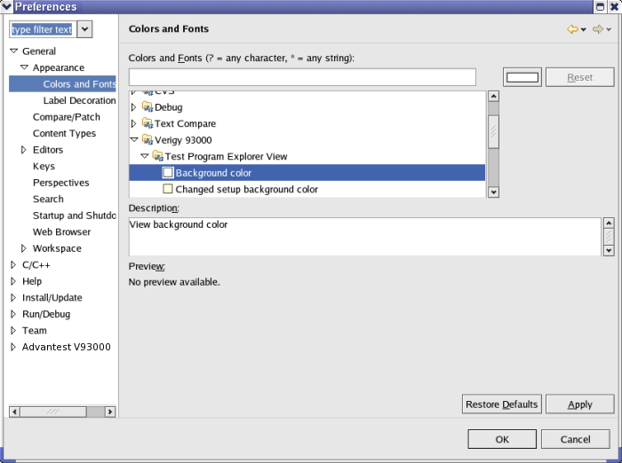
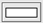

Changing Colors and Fonts
You can change the appearance, like colors or fonts, of the following views and elements:
- Pattern debug tool
- System and datalog console
- Tables
- Test program explorer
Example
To change colors or/and fonts of the test program explorer:
- In the short cut bar of the SmarTest Eclipse window select

- In the left pane of the Preferences window select .
- In the center pane select.
- Choose one item under Test Program Explorer View, for example, Background color as shown in the example above.
- Click the button

.A window with predefined colors and a color compose tool opens.
- Select a color or compose a color and click OK.
- In the Preferences window click Apply and then OK.
Functional changes
- Introduced before SmarTest 6.3.2
- SmarTest 6.5.0: Change the fonts of tables in SmarTest.